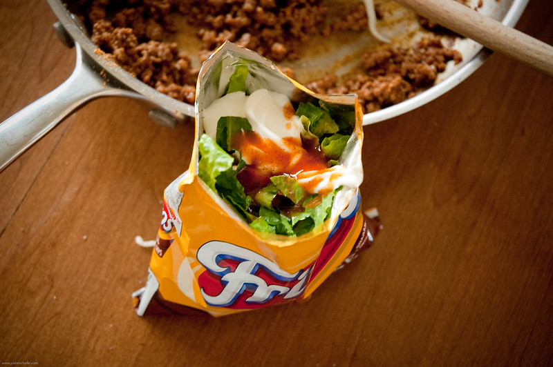

Walking Taco

It's like a taco but it's so easy to hold!
Portable, delicious, and easy to make
Ingredients
- 1 LB Ground Beef
- 3/4 Cup Water
- 1 Pack of Taco Seasoning
- 4 Bags of Fritos
- 2 Cups Shredded Lettuce
- 1 Cup Shredded Cheese
- 1 Chopped Tomato
- 1/2 Cup Sour Cream
- 1/3 Cup Salsa
Steps
- Cook and stir ground beef in a large skillet over medium heat until browned and crumbly, 7 to 10 minutes. Drain excess oil. Mix in water and taco seasoning. Bring to a boil, then reduce the heat and simmer for 5 minutes, stirring occasionally.
- Gently crush corn chips in the sealed bags. Snip one top and one bottom corner off each bag, then cut open along the side edge.
- Spoon equal amounts of beef, lettuce, Cheddar, tomato, sour cream, and salsa into each bag on top of crushed chips.
- Serve in the bag and eat using a fork. Enjoy!
Home